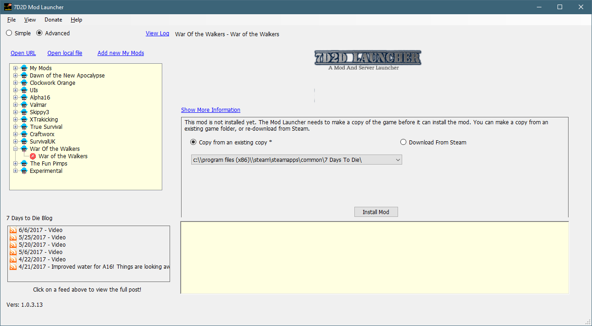
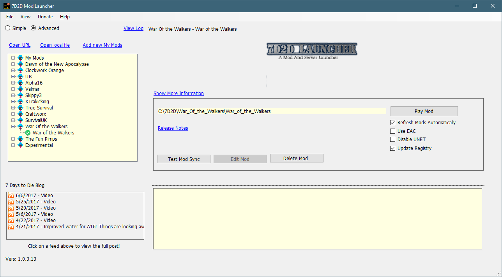
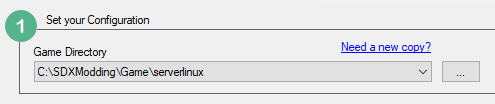
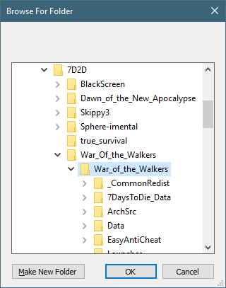

We will be using the 7D2D Mod Launcher to install a clean version of the War of the Walkers Mod.

Click on Install Mod to make a copy from your clean Steam folder.
Once installed, click on the Play button in the 7D2D Mod Launcher to start the game for the first time.

This will install the mod correctly. When the game is loaded, you may exit the game and resume the tutorial.
In the Set your Configuration, in the 7D2D Mod Helper, click on the button with the three dots and navigate to the War of the Walkers folder.


Created with the Personal Edition of HelpNDoc: Free EPub and documentation generator